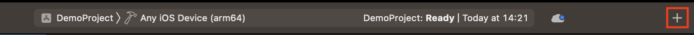
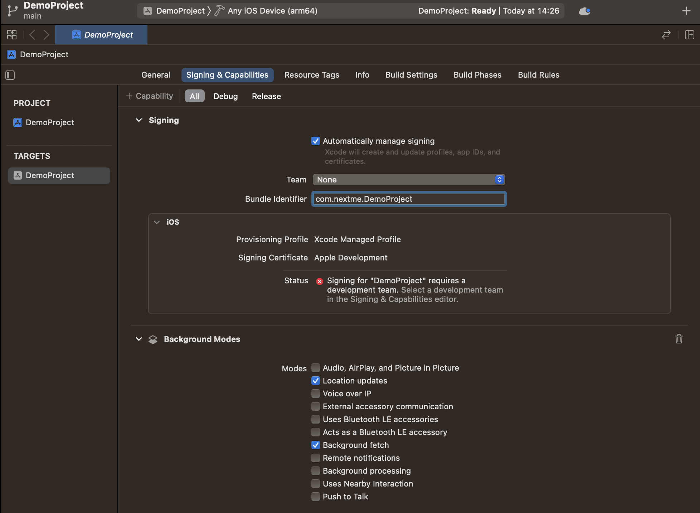
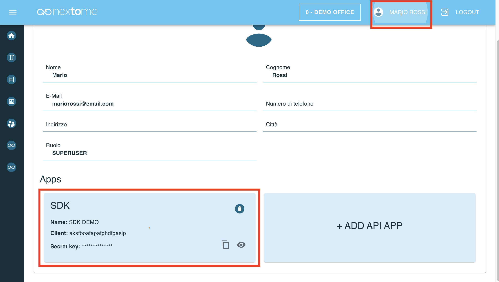

iOS Integration - Getting started
A full working example app is available on this repository. Run to see Nextome Sdk in action. It also contains a seamless outdoor/indoor map integration using OpenStreetMap for outdoor and Nextome Flutter Map for indoor.
Prerequisites
- Xcode 14.3
- Make sure that your project meets these requirements:
- Swift 5.7
- Minimum deployment: iOS 13.2
- Have credentials for jFrog
- Have credentials for our portal
How to include
Cocoapods
Phoenix Sdk is distributed with Cocoapods and artifactory. Be sure to have CocoaPods installed, or follow this guide to install it.
Then it is necessary to configure our private Spec Repo.
-
Install the cocoapods-art plugin
Note
It is recommended to install both the CocoaPods client and the cocoapod-art plugin as gems
-
Add artifactory credentials in the netrc file
Copy this then close and saveNote
If you get an error of this type: "Permission bits, should be 0600, but are 644"
Run this command:
chmod 0600 ~/.netrc -
Add an Artifactory repository
-
Synchronize the cocoapods-art plugin with artifactory.
As opposed to the cocoapods client's default behavior, the cocoapods-art plugin does not automatically update its index whenever you run client commands (such as install). To keep your plugin's index synchronized with your CocoaPods repository, you need to update it by executing the following command:
-
Create a Podfile if you don't already have one. From the root of your project directory, run the following command
-
To your Podfile, be sure that the platform is at least 13.2 then add the CocoaPods specs source and the cocoapods-art plugin. Then add the PhoenixSdk pod
-
Install the pods, then open your .xcworkspace file to see the project in Xcode
-
Open your
xcworkspacefile
Setup
In order to work properly the SDK requires to setup some permissions and capabilities:
Add Background capabilities
If your app needs to compute the position even if it is in background, it is required to add the background capability.
- Select your project in Xcode’s Project navigator.
- Select the app’s target in the Targets list.
- Click the Signing & Capabilities tab in the project editor.
-
Add the background capability

-
Add background processing and Location Updates

Add permissions
Add these permissions in the info.plist:
- Privacy - Location Always and When In Use Usage Description
- Privacy - Location Always Usage Description
- Privacy - Location When In Use Usage Description
Retrive SDK Credentials
Log-in the web dashboard and retrieve the Client and Secret Key for the SDK.
Those credentials are available from your profile, in the Apps section.

SDK Initialization
Firsty import the Phoenix SDK Module
Then initialize the NextomePhoenixSdk.
It requires the given Client and Secret Key.
let nextomeSdk = NextomePhoenixSdk.Builder(clientId: CLIENT_ID, clientSecret: CLIENT_SECRET).build()
Note
By default the SDK works with settings defined in the web portal. The NextomePhoenixSdk.Builder allows to override some of those as described in the next sections. But please notice that this operation is extremely dangerous and should only be made in accordance with the Nextome Team because has an huge impact on the localization's performance.
Next steps
- See Start Localization to use Nextome SDK.
Examples
A full working example app is available on this repository.
© 2025 Nextome srl | All Rights Reserved.